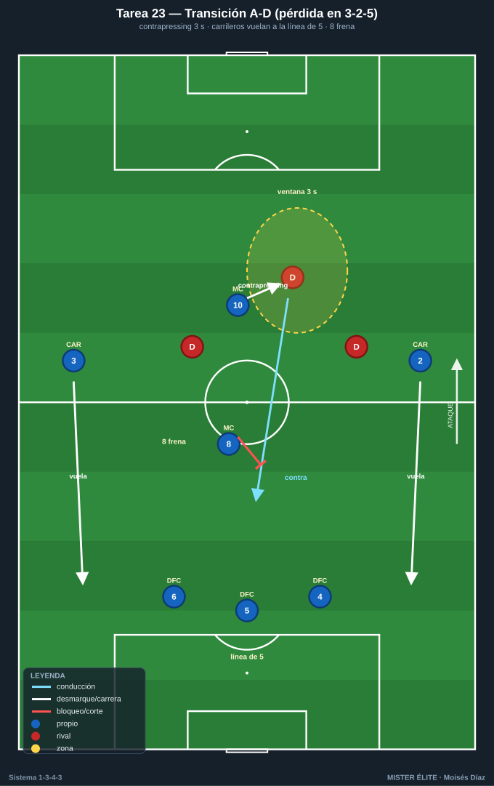
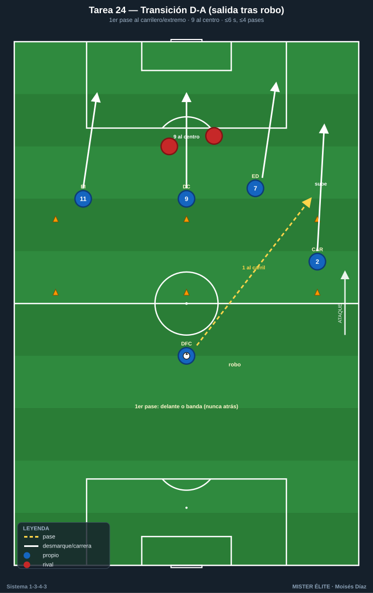
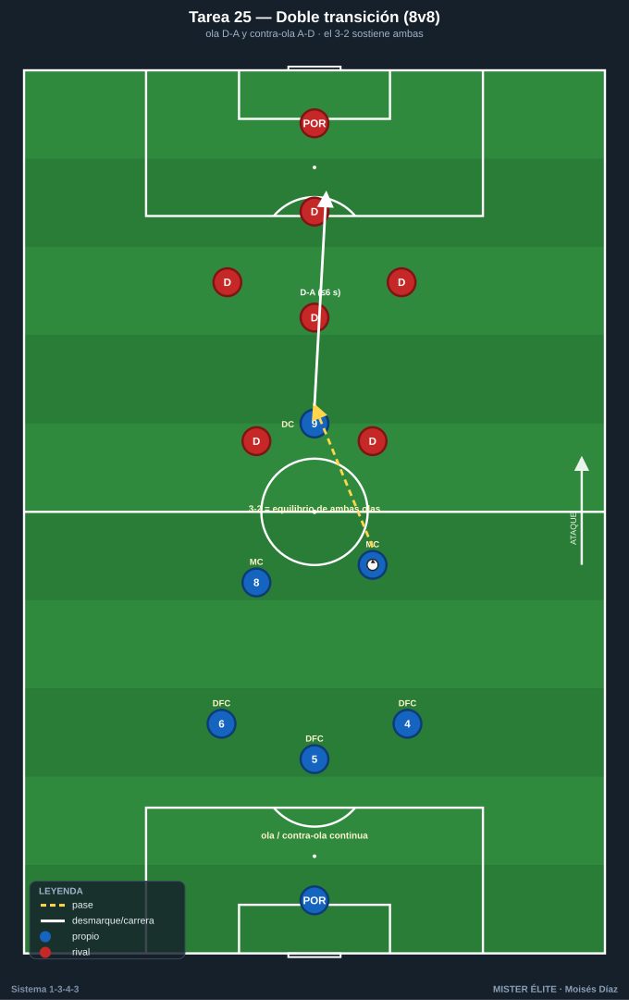
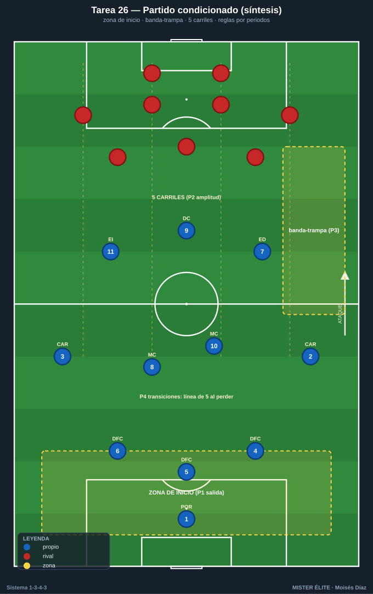

Bloque 6 · Transiciones + partido condicionado aplicado
Ola y contra-ola, y la síntesis del curso en 11v11. Categorías: F = Fundamentación · A = Aplicación · S = Específica/competitiva. Leyenda: ◯ atacante · ✕ defensor · → pase · ⇢ conducción · ⟿ desmarque · ▭ portería · ⬡ mini-portería · ⬛ zona/cono.
Tarea 6.1 — Transición A-D: reacción a la pérdida con carrileros arriba
- Objetivo: Reacción inmediata a la pérdida desde la animación 3-2-5: contrapressing del jugador más cercano + repliegue de carrileros a la línea de 5.
- Organización: 55×50 m, portería ▭ + POR 1 (de A) y 2 mini-porterías ⬡ (de A, en campo de B). A ataca en 3-2-5; B defiende y contraataca al robar.

- Desarrollo: A ataca buscando las mini-porterías. En cuanto pierde, se mide: el más cercano hace contrapressing 2-3 s; si no recupera, el equipo recula y forma línea de 5 (carrileros vuelan).
- Provocaciones:
- Ventana de contrapressing de 3 s: si A recupera dentro = punto; si pasa, debe estar replegado en línea de 5.
- Si B llega a la portería de A por el pasillo de un carrilero subido = gol doble.
- El MC 8 inicia el freno (primer obstáculo al contra).
- Variantes: F B contraataca lento → A B a ritmo → S B con punta rápido a la espalda.
- Coaching: Reacción de medio segundo; "presiona o recula, no dudes"; carrilero esprinta atrás; el 8 frena, el 5 ordena la línea de 5.
- Duración/Categoría: 4×5 min. A.
Tarea 6.2 — Transición D-A: salir del robo por el carril del carrilero
- Objetivo: Convertir el robo en ataque rápido aprovechando los carriles de los carrileros y la profundidad de los extremos/9.
- Organización: Campo completo a lo ancho, 65 m. A defiende en línea de 5 / bloque medio. Al recuperar, ataca la portería ▭ de B con POR. Conos marcan los carriles de salida rápida.

- Desarrollo: B ataca; A defiende y, al robar, busca salida rápida: primer pase al carrilero que sube por su carril o al extremo en profundidad; el 9 ataca el centro; finalización en pocos pases.
- Provocaciones:
- Finalizar en ≤6 s y ≤4 pases desde el robo.
- El primer pase tras robar debe ir hacia delante o a banda (prohibido el pase atrás).
- Gol con intervención de un carrilero o extremo en carrera = doble.
- Variantes: F B no repliega → A B repliega a medias → S B con repliegue completo (A elige contra rápido o pausa).
- Coaching: Cabeza levantada al robar; primer pase vertical o a banda; carrileros y extremos rompen al frente; decidir contra o pausa según la defensa rival.
- Duración/Categoría: 4×5 min. A.
Tarea 6.3 — Doble transición: ola y contra-ola
- Objetivo: Encadenar D-A (contraataque) y, si no llega, transición A-D, manteniendo el equilibrio del sistema en ambos sentidos.
- Organización: 60×50 m, 2 porterías ▭ + porteros. 8v8 en estructura de 1-3-4-3 reducido. Saques siempre por el portero para forzar construcción y, por tanto, robos y transiciones.

- Desarrollo: Juego fluido. Cada robo dispara una transición D-A; si se corta, el equipo que perdió hace transición A-D. Se vive la cadena ola/contra-ola continuamente.
- Provocaciones:
- Tras un robo, 6 s para finalizar (D-A); si no, balón muerto y se reinicia.
- El equipo que sufre pérdida debe formar línea de 5 en ≤6 s o el rival suma punto extra al marcar.
- Gol en transición (≤6 s tras robo) = doble; gol en ataque posicional = simple.
- Variantes: F campo grande → A medidas estándar → S campo reducido (transiciones más rápidas y caóticas).
- Coaching: Mentalidad de los dos momentos; roles claros (quién presiona, quién recula, quién rompe); el equilibrio del 3-2 sostiene ambas transiciones.
- Duración/Categoría: 4×6 min. S.
Tarea 6.4 — Partido condicionado aplicado 1-3-4-3 (síntesis del curso)
- Objetivo: Integrar todos los comportamientos del sistema (salida 3+1, línea 3↔5, pressing con gatillos, mutación de carrileros, tridente, transiciones) en un 11v11 con reglas que premien cada uno.
- Organización: Campo completo, 11v11. A en 1-3-4-3 completo; B en sistema a elegir (4-4-2 / 4-3-3). Zonas pintadas: zona de inicio, banda-trampa, línea de 5 carriles.

- Desarrollo: Partido real con bloques de reglas que rotan cada periodo, cada uno premiando un comportamiento del sistema.
- Provocaciones (rotan por periodos):
- P1 Salida: A debe salir jugada desde los 3 DFC + 8; robo de B en zona de inicio = punto para B.
- P2 Mutación/amplitud: gol con carrilero por fuera = doble; sin carrilero pasado de medios, gol no cuenta.
- P3 Pressing: recuperar en banda-trampa y finalizar en <8 s = doble.
- P4 Transiciones: gol en ≤6 s tras robo = doble; obligación de formar línea de 5 al perder.
- Variantes: F periodos largos y B pasivo → A periodos estándar → S B de nivel alto sin condiciones (A aplica los comportamientos por iniciativa propia).
- Coaching: Recordar el comportamiento de cada periodo; corregir en frío entre periodos; conectar las fases (recupero alto → ataque del tridente → si pierdo, línea de 5); liderazgo del 5 y de los MC.
- Duración/Categoría: 4 periodos de 8-10 min. S.